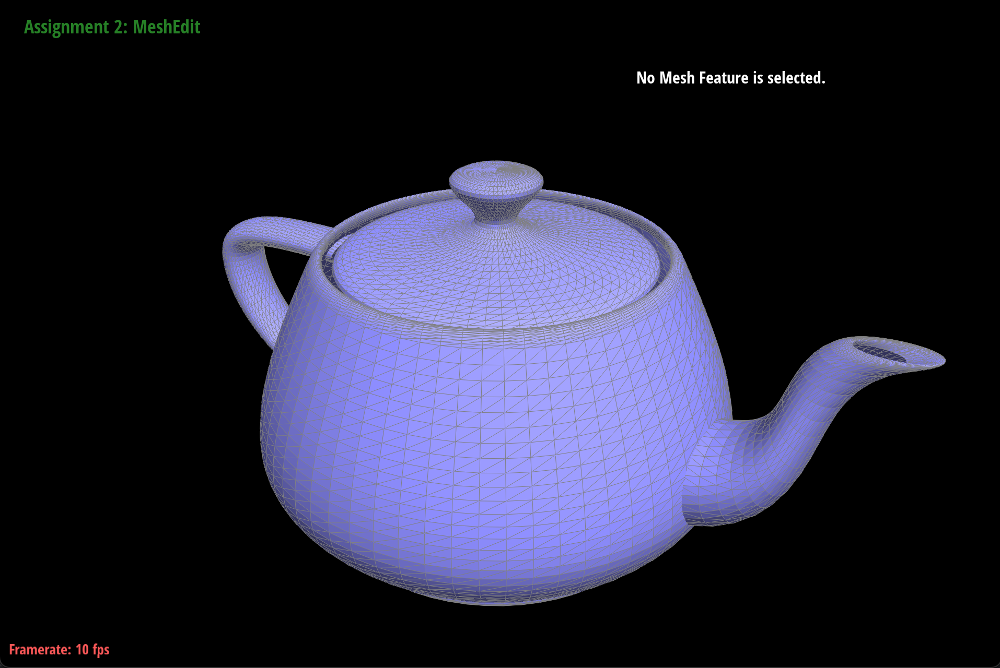

Overview
Give a high-level overview of what you implemented in this project. Think about what you've built as a whole.
Share your thoughts on what interesting things you've learned from completing the project.
Section I: Bezier Curves and Surfaces
Part 1: Bezier curves with 1D de Casteljau subdivision
de Casteljau's algorithm involves taking successive midpoints defined by the paramter t, until there is only one, which is used to draw the bezier curve over many t values. We implemented it by taking the initial vector of points, and calculate the aforementioned midpoints, which we return in a vector.
Part 2: Bezier surfaces with separable 1D de Casteljau subdivision
In order to implement Bezier surfaces, we can start by running the 1D algorithm along one dimension with paramter u (instead of t), along each "row" of the grid. This gives us n points, which we can use to run the 1D algorithm again, but in the other direction using parameter v. Evaluating this for all u and v from 0 to 1, we end up with a continuous surface that abides by the same general principles as the 1D case, where the surface is "drawn" by considering where the final point is at each value of u and v.

Section II: Sampling
Part 3: Average normals for half-edge meshes
The normal vectors computed for us were already area weighted because they were calculated by a cross-product. Thus all we had to do was sum the vectors as usual, and normalize it at the end.
On the left we have the original shading scheme, and on the right, Phong shading. The effect is very apparent once the wireframe has been removed, as the color smoothing reduces drastically the noiceability of the small edges.
Part 4: Half-edge flip
We implemented edge flip by first collecting all necessary half edges for the flip, and then using them to reassign certain pointers. Because we simply moved the pointers to the original edge, an important part of this implementation was to reassign the half-edge pointers of both vertices from the edge that wa flipped. We found this through debugging, because if not done, there is some chance those vertices would now be pointing to half-edges they are no longer adjacent to.
There were no interestin debugging steps for this part. Initially there were some interesting errors, where consecutive flips of the same edge would appear to remove and return certain faces, but we solved these by thinking more closely about which pointers needed to be changed with regard to the mesh.
The teapot, shown with an increasing number of edge flips.
Part 5: Half-edge split
We implemented split in a similar way to flip. First we get pointers to all half-edges, vertices, and faces. Then we go through and do a set of predefined operations to reassign all of their pointers. A fun bug we ran into is when we replaced e->next() with (e++) because we thought these were equivalent. This misconception led to the program crashing.
The first photo is the initial teapots, and progressive edges and splits are shown.
Part 6: Loop subdivision for mesh upsampling
We followed the steps provided in order to perform loop subdivision. The first step is to mark which vertices are old, so later we can use this when determining which edges to flip. We then go through and calculate where new vertices will need to lie, and save the position in the edges. Finally we do the procedure of splitting all original non-boundary edges, followed by flipping new edges between old and new vertices that were not part of original edges.
Generally shapes are smoothed out by loop subdivision, becoming higher res. For smaller shapes, like the cube, it distorts the shape very far from its original form.
Here we see the cube splitting from its intitial configuration.
The asymmetry is caused by the formatting of the edges in the initial cube, which are not as close to rotationally symmetric as it could be. By trying to flip the edges to a more balanced pattern this effet can be reduced or increased. This next attempt actually produces an even less symmetric shape.
Some of the fun bugs we ran into, including a rather scary torus.
Section III: Optional Extra Credit
If you are not participating in the optional mesh competition, don't worry about this section!
Part 7: Design your own mesh!